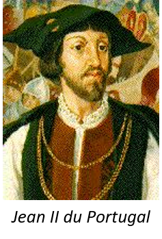
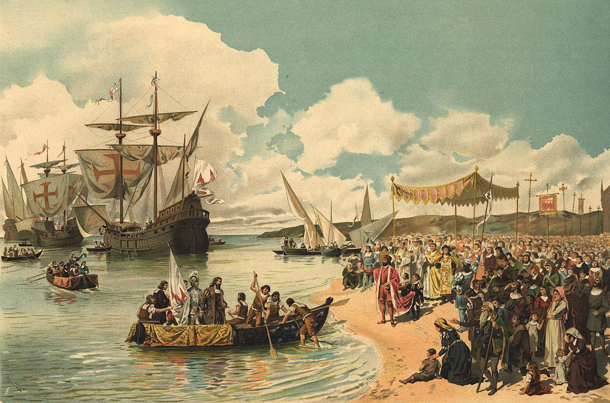

Histoire


Vasco de Gama est le fils d'Estêvao de Gama et de IsabelSodré. Il est né en 1469 à Sines, dans le sud ouest du Portugal. Son père étant le gouverneur
de Sines et Silves (deux petites villes), Vasco de Gama est le benjamin d'une famille de 5 enfants. Il passa ainsi son enfance bercée par les légendes des croisades et de la Reconquista.
Vers 1480, Vasco de Gama rejoint son père dans l'ordre de Santiago de L'Epée. Le maître de c'est ordre était alors le futur roi du Portgal, le prince Jean.
Lorsque en 1481 le prince Jean monte sur le trône, il favorisa les perspectives d'avenir de Vasco de Gama. En effet, en 1492, il envoie Vasco de Gama en mission pour saisir
des navires français. C'est ainsi que Vasco de Gama put prouver à son entourage pour la première fois son talent.
Depuis le début du 15e siècle, le Portugal, sous la direction du prince Henri Le Navigateur, explorait les côtes africaines. A la mort du prince, en 1460, la courronne du portugal avait stopé la poursuite de ses explorations qu'elle trouvait trop couteuse. Ce n'est qand 1487 que les explorations reprennent avec Bartolomeu Dias, chargé par le roi Jean II du Portugal d'explorer les côtes africaines jusqu'au Cap de Bonne-Espérance. L'étape suivante de cette fabuleuse aventure est de rallier les Indes, centre économique et commerciale du monde pour ses épices, pierres précieuses, textile et riz. Cette expédition permettrait de briser le monopole de la République de Venise au profit du Portugal...

En 1497, Manuel 1er fait appel à Vasco de Gama pour cette aventure. Notre héros, alors agé de 37 ans, quitte le Tage le 8 juillet 1497 avec 200 hommes à bord de quatre navires.
Après moultes péripéties, Vasco de Gama débarque finalement le 21 mai 1498, au port de Pantalayini, à une vingtaine de kilomètre de la cité-Etat de Calicut après 6 mois de voyage.
Malheureusement, ce voyage aura été un echec. En effet, le chef de Calicut refuse les avantages commerciaux que Vasco de Gama lui propose, déçu par la marchandise proposé par les Portugais.
Néanmoins, de retour au Portugal, il est couvert d'honneurs par ses concitoyens et reçoit le titre d'Amiral des Indes. Vasco de Gama rentre ainsi dans la légende...
En1502, Vasco de Gama repart pour Calicut avec une flotte de 20 navires et de nouvelles marchandises dans l'espoirs qu'elles interresseront les Indiens.
Cette expedition se soldera par un echec, à la suite de nombreux massacres prepétrés par Vasco de Gama. En effet, il n'arrivera finalement pas à soumettre le chef de Calicut.
Malgré le faite qu'après ce voyage Vasco de Gama tombe dans la disgrâce, cette expédition marque les débuts de l'empire colonial portugais grâce aux comptoirs qu'il a fondé le long des côtes africaines.
 ⇫
De retour au Portugal, Vasco de Gama tombe en disgrâce, il part s'installer à Evora avec sa famille et y reste pendant 20 ans.
Ce n'est quand 1519 que Manuel Ier le nomme Comte de Vidiguera, et en 1524 que son successeur Jean III le nomme vice-roi de Indes.
Pour lutter contre la corruption qui se développe dans les comptoirs, Vasco de Gama entreprend un troisième voyage. Ce voyage sera son dernier car il meurt peut après son arrivée. Son corps est ramené au Portugal en 1539 par un de ses fils près du village de Vidiguera.